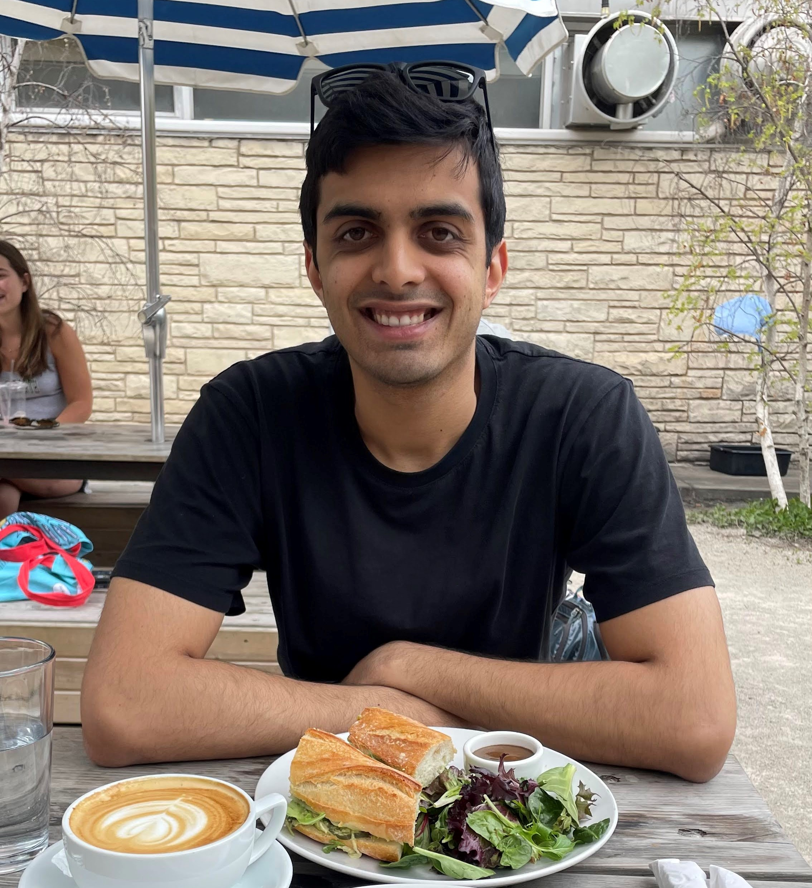

Casimir Kothari

Email: ckothari (at) uchicago (dot) edu.
I am interested in algebraic geometry and number theory. I received my PhD at the University of Chicago, where my advisor was Matthew Emerton.
Previously, I was an undergraduate at Princeton University.
Research
Recently I have been interested in moduli of finite locally free group schemes, and in de Rham cohomology/Hodge theory in positive and mixed characteristic.
- Dieudonné theory for n-smooth group schemes, with Joshua Mundinger. To appear in Algebra and Number Theory. [pdf] [arXiv] [Informal talk notes] [Companion Note]
- Duality of differential operators and algebraic de Rham cohomology, with Caleb Ji, Oliver Li, Svetlana Makarova, Shubhankar Sahai,
and Sridhar Venkatesh. [pdf] [arXiv]
- Arbitrarily large jumps in the de Rham and Hodge cohomology of families in characteristic p. To appear in Journal de Théorie des Nombres
de Bordeaux. [pdf] [arXiv]
- The Explicit Sato-Tate Conjecture For Primes In Arithmetic Progressions, with Trajan Hammonds, Noah Luntzlara, Steven J. Miller,
Jesse Thorner, and Hunter
Wieman. International Journal of Number Theory, Vol. 17, No. 08, pp. 1905-1923 (2021). [pdf] [arXiv]
Talk Notes
Other Notes